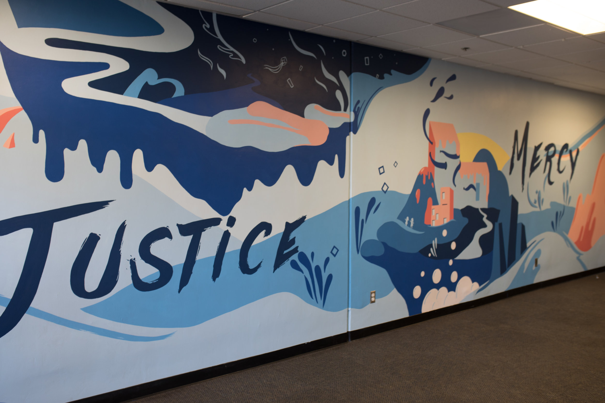

Justice
Ethics, integrity, and fair dealing in every sphere of responsibility.
James 3:17
Wisdom from above is impartial and full of good fruit.
Wisdom from above is impartial and full of good fruit.
Mercy
Empathy, patience, and the willingness to restore rather than discard people.
Luke 6:36
Be merciful, even as your Father is merciful.
Be merciful, even as your Father is merciful.
Humility
Teachability, low ego, and an approachability that stays near to others.
1 Peter 5:5
Clothe yourselves with humility toward one another.
Clothe yourselves with humility toward one another.
Closing insight: Strong leadership is not measured only by force. It is revealed by how a man handles power, people, and posture under God.